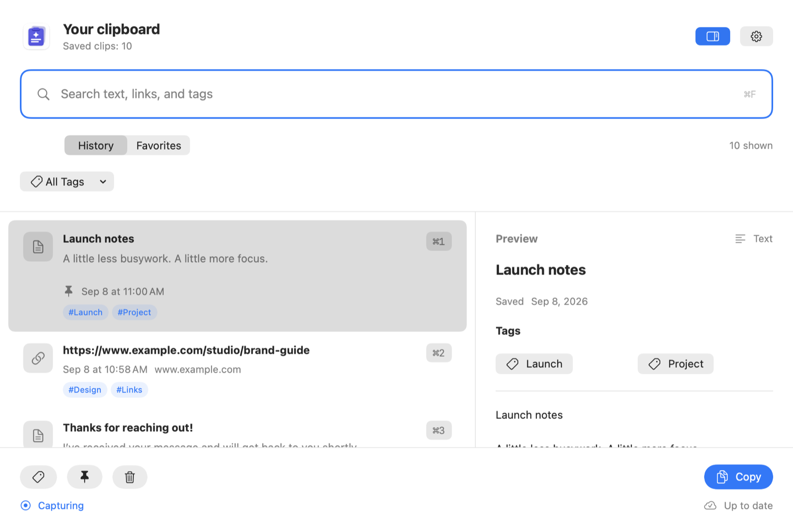
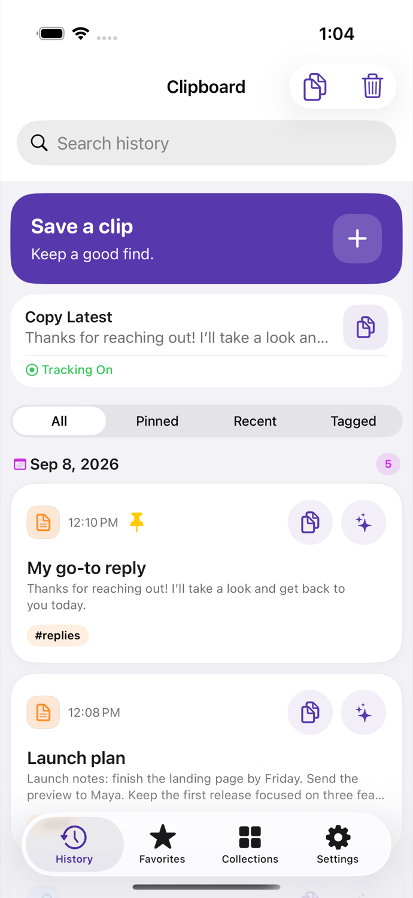
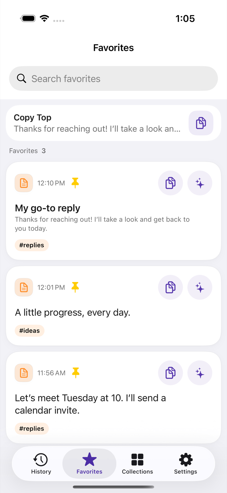
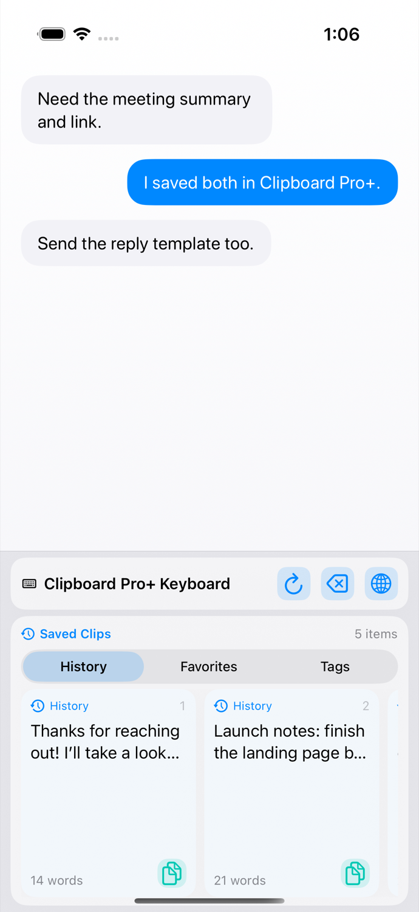
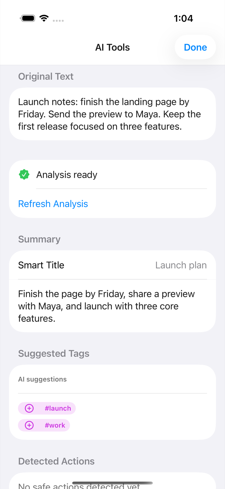
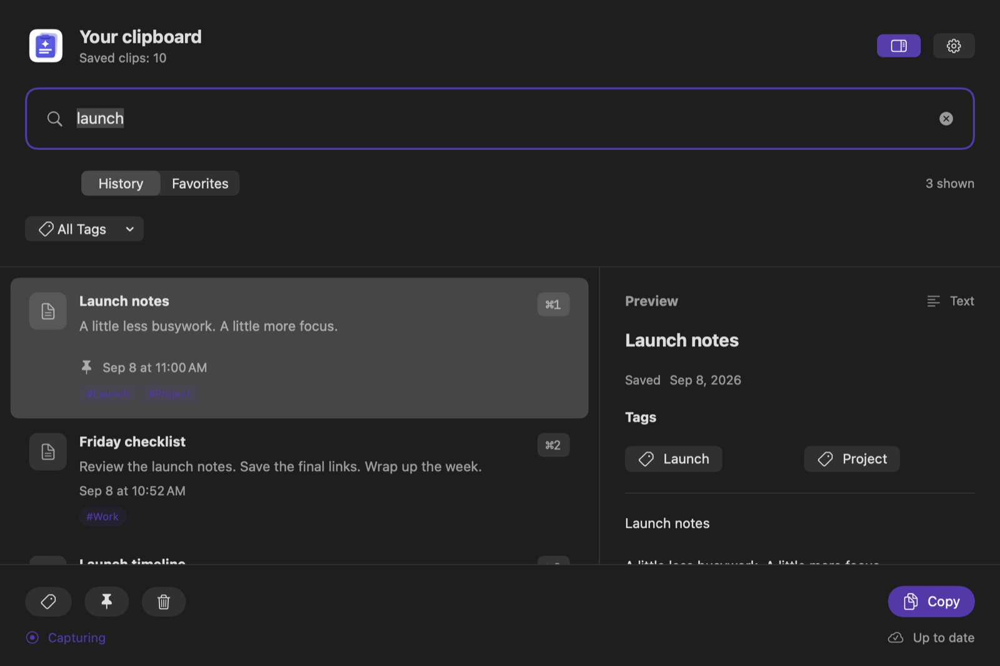

A better home for what you copy
Keep the
good stuff.
Use it again.
Clipboard Pro+ turns useful text, links, and everyday replies into a searchable library that is ready when you are.
Available now for iPhone, iPad, and Mac.




For iPhone & iPad
Save it here.
Use it where you type.
Collect the words you reach for most, then bring them back without digging through old conversations or notes.
- 01Search your history
Find saved text and links in one place.
- 02Pin favorite replies
Keep repeat answers, templates, and notes close.
- 03Save from Share
Bring text and web links in from other apps.
- 04Paste from the keyboard
Use saved clips in chats, forms, and documents.
Clipboard tracking on iPhone and iPad works while the main app is active. The saved-clips keyboard needs setup. Premium adds tags, Smart Collections, optional iCloud sync, and AI tools on supported devices.
AI tools for iPhone & iPad
Your clips,
with a little more clarity.
On supported devices, Apple Intelligence helps you make more of the text you have already saved. The work happens on your device.
- Find the point
Turn a long clip into a short summary and a useful title.
- Rewrite your way
Try a professional, friendly, shorter, corrected, or bulleted version.
- Keep it organized
Get suggested tags so saved text is easier to find again.
Requires Premium, iOS or iPadOS 26+, and a compatible device with Apple Intelligence enabled.

Native Mac app · available now
Your clipboard,
at your fingertips.
The Mac app gives copied text and links a searchable place to land. Open it from the menu bar or a keyboard shortcut, then copy a result for use in another app.
Keep supported text and links while you work.
Get back to clips, Favorites, and tags quickly.
Use one library with compatible app versions.
Automatic capture, tag editing, and iCloud sync require Premium. Requires macOS 15.4 or later.

Help & transparency
The details are close by.
Setup help and clear privacy information for every device.
Ready when you are
Keep your best words within reach.
Available for iPhone, iPad, and Mac.